Access to robust search and query tools is essential to examine the general trends of a dataset. QueriesSearches or inquiries. are essentially questions posed to a database. The selective display and retrieval of information based on these queries are essential components of any geographic information system (GIS). There are three basic methods for searching and querying attribute data: (1) selection, (2) query by attribute, and (3) query by geography.
SelectionA defined subset of the larger set of data points or locales. represents the easiest way to search and query spatial data in a GIS. Selecting features highlight those attributes of interest, both on-screen and in the attribute table, for subsequent display or analysis. To accomplish this, one selects points, lines, and polygons simply by using the cursor to “point-and-click” the feature of interest or by using the cursor to drag a box around those features. Alternatively, one can select features by using a graphic object, such as a circle, line, or polygon, to highlight all of those features that fall within the object. Advanced options for selecting subsets of data from the larger dataset include creating a new selection, selecting from the currently selected features, adding to the current selection, and removing from the current selection.
Map features and their associated data can be retrieved via the query of attribute information within the data tables. For example, search and query tools allow a user to show all the census tracts that have a population density of 500 or greater, to show all counties that are less than or equal to 100 square kilometers, or to show all convenience stores within 1 mile of an interstate highway.
Specifically, SQL (Structured Query Language)A programming language designed to manage data in a relational database. is a commonly used computer language developed to query attribute data within a relational database management system. Created by IBM in the 1970s, SQL allows for the retrieval of a subset of attribute information based on specific, user-defined criteria via the implementation of particular language elements. More recently, the use of SQL has been extended for use in a GIS (Shekhar and Chawla 2003).Shekhar, S., and S. Chawla. 2003. Spatial Databases: A Tour. Upper Saddle River, NJ: Prentice Hall. One important note related to the use of SQL is that the exact expression used to query a dataset depends on the GIS file format being examined. For example, ANSI SQL is a particular version used to query ArcSDE geodatabases, while Jet SQL is used to access personal geodatabases. Similarly, shapefiles, coverages, and dBASE tables use a restricted version of SQL that doesn’t support all the features of ANSI SQL or Jet SQL.
As discussed in Chapter 5 "Geospatial Data Management", Section 5.2 "Geospatial Database Management", all attribute tables in a relational database management system (RDBMS) used for an SQL query must contain primary and/or foreign keys for proper use. In addition to these keys, SQL implements clauses to structure database queries. A clauseA grammatical unit in SQL. is a language element that includes the SELECT, FROM, WHERE, ORDER BY, and HAVING query statements.
While the SELECT and FROM clauses are both mandatory statements in an SQL query, the WHERE is an optional clause used to limit the output set. The ORDER BY and HAVING are optional clauses used to present the information in an interpretable manner.
Figure 6.6 Personal Addresses in “ExampleTable” Attribute Table
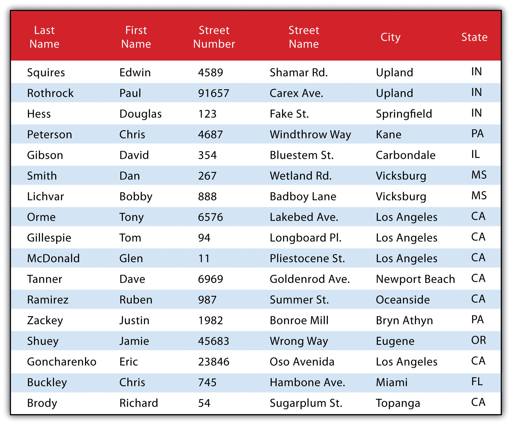The following is a series of SQL expressions and results when applied to Figure 6.6 "Personal Addresses in “ExampleTable” Attribute Table". The title of the attribute table is “ExampleTable.” Note that the asterisk (*) denotes a special case of SELECT whereby all columns for a given record are selected:
SELECT * FROM ExampleTable WHERE City = “Upland”This statement returns the following:
Consider the following statement:
SELECT LastName FROM ExampleTable WHERE State = “CA” ORDER BY FirstNameThis statement results in the following table sorted in ascending order by the FirstName column (not included in the output table as directed by the SELECT clause):
In addition to clauses, SQL allows for the inclusion of specific operators to further delimit the result of query. These operators can be relational, arithmetic, or Boolean and will typically appear inside of conditional statements in the WHERE clause. A relational operatorA construct that tests a relation between two entities. employs the statements equal to (=), less than (<), less than or equal to (<=), greater than (>), or greater than or equal to (>=). Arithmetic operatorsA construct that performs an arithmetic function. are those mathematical functions that include addition (+), subtraction (−), multiplication (*), and division (/). Boolean operatorsA construct that performs a logical comparison. (also called Boolean connectors) include the statements AND, OR, XOR, and NOT. The AND connector is used to select records from the attribute table that satisfies both expressions. The OR connector selects records that satisfy either one or both expressions. The XOR connector selects records that satisfy one and only one of the expressions (the functional opposite of the AND connector). Lastly, the NOT connector is used to negate (or unselect) an expression that would otherwise be true. Put into the language of probability, the AND connector is used to represent an intersection, OR represents a union, and NOT represents a complement. Figure 6.7 "Venn Diagram of SQL Operators" illustrates the logic of these connectors, where circles A and B represent two sets of intersecting data. Keep in mind that SQL is a very exacting language and minor inconsistencies in the statement, such as additional spaces, can result in a failed query.
Figure 6.7 Venn Diagram of SQL Operators
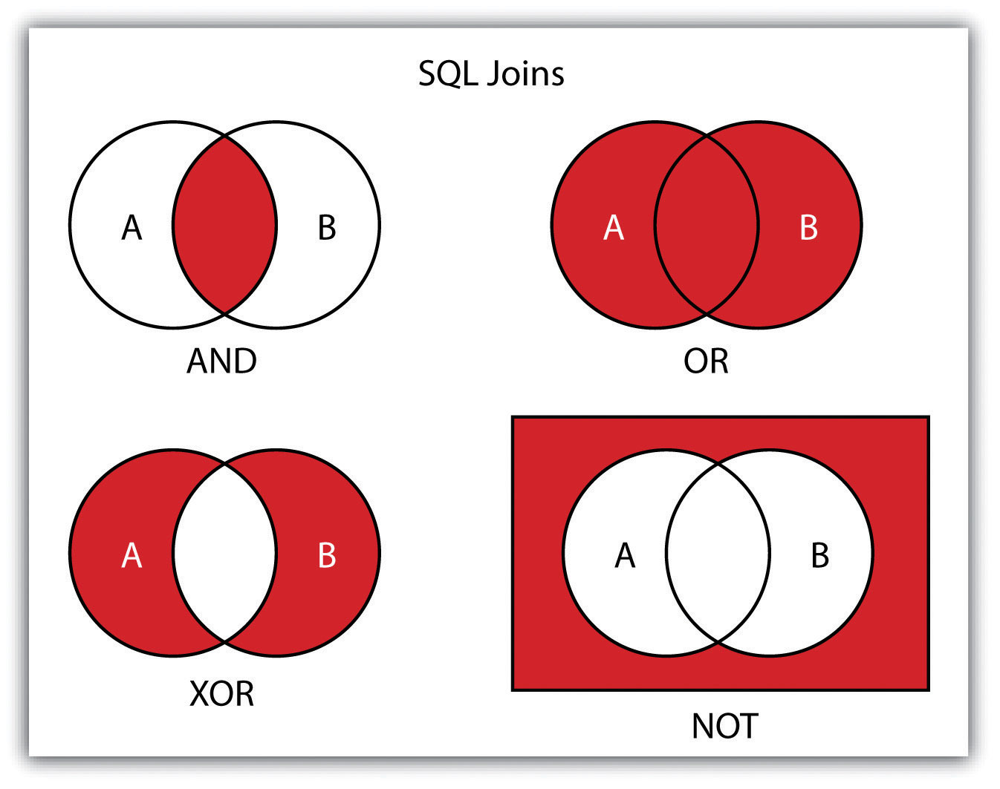Used together, these operators combine to provide the GIS user with powerful and flexible search and query options. With this in mind, can you determine the output set of the following SQL query as it is applied to Figure 6.1 "Histogram Showing the Frequency Distribution of Exam Scores"?
SELECT LastName, FirstName, StreetNumber FROM ExampleTable WHERE StreetNumber >= 10000 AND StreetNumber < 100 ORDER BY LastNameThe following are the results:
Query by geography, also known as a “spatial query,” allows one to highlight particular features by examining their position relative to other features. For example, a GIS provides robust tools that allow for the determination of the number of schools within 10 miles of a home. Several spatial query options are available, as outlined here. Throughout this discussion, the “target layer” refers to the feature dataset whose attributes are selected, while the “source layer” refers to the feature dataset on which the spatial query is applied. For example, if we were to use a state boundary polygon feature dataset to select highways from a line feature dataset (e.g., select all the highways that run through the state of Arkansas), the state layer is the source, while the highway layer is the target.
Figure 6.8
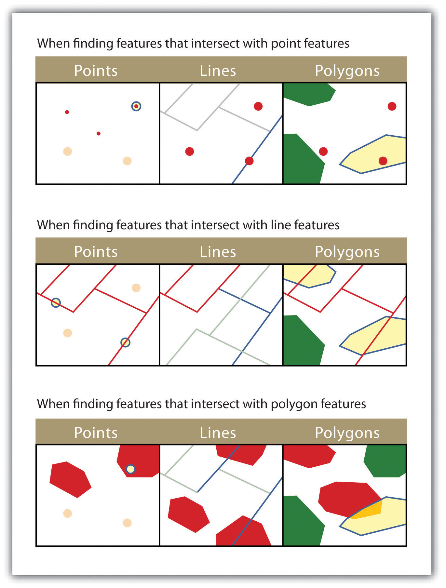The highlighted blue and yellow features are selected because they intersect the red features.
Figure 6.9
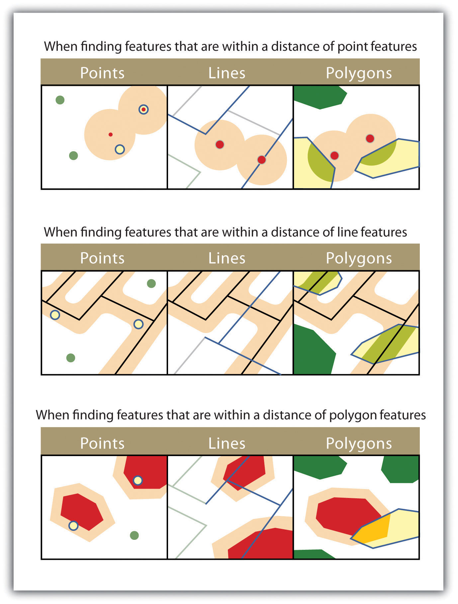The highlighted blue and yellow features are selected because they are within the selected distance of the red features; tan areas represent buffers around the various features.
Figure 6.10
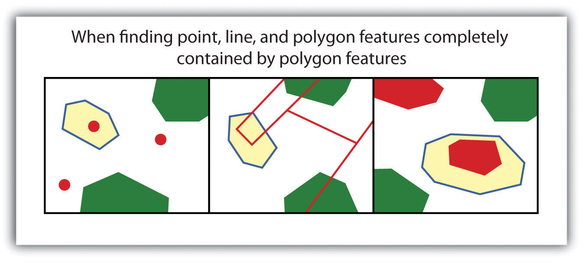The highlighted blue and yellow features are selected because they completely contain the red features.
Figure 6.11
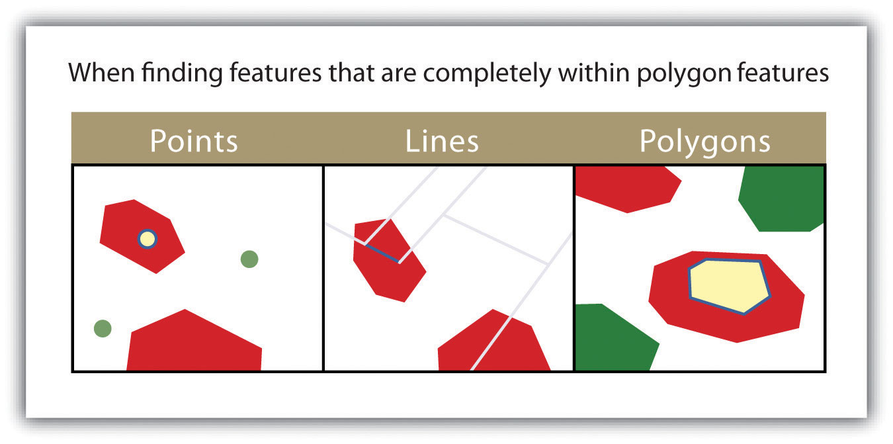The highlighted blue and yellow features are selected because they are completely within the red features.
Figure 6.12
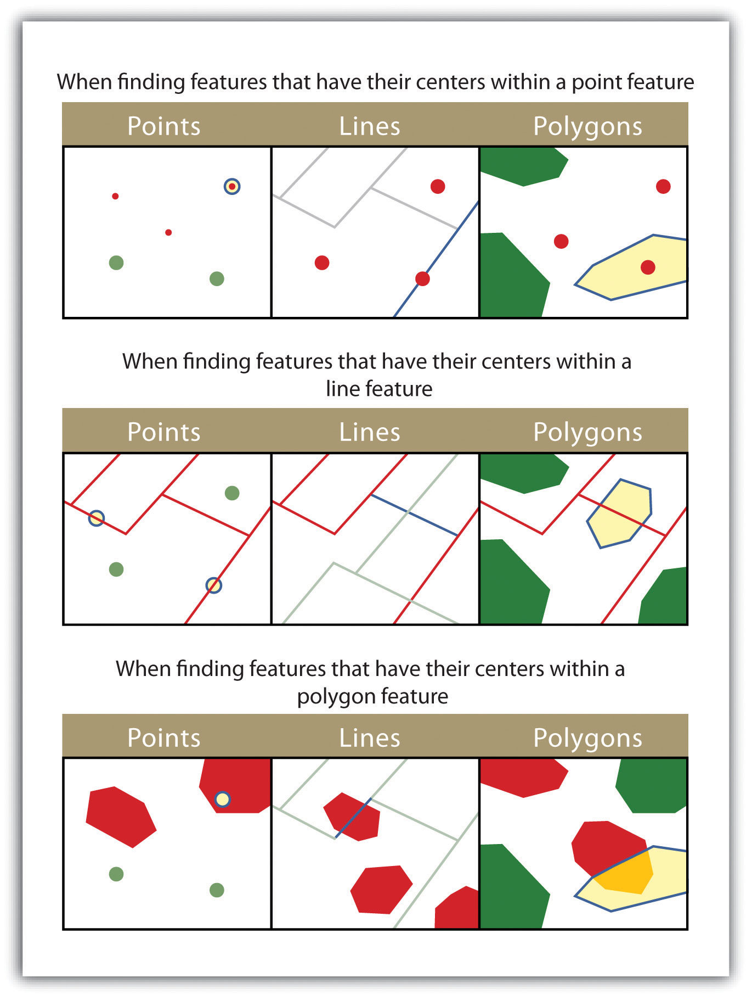The highlighted blue and yellow features are selected because they have their centers in the red features.
Figure 6.13
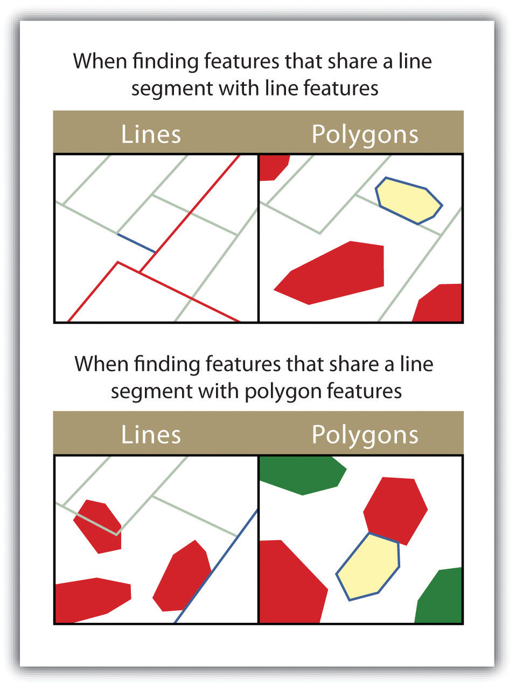The highlighted blue and yellow features are selected because they share a line segment with the red features.
Figure 6.14
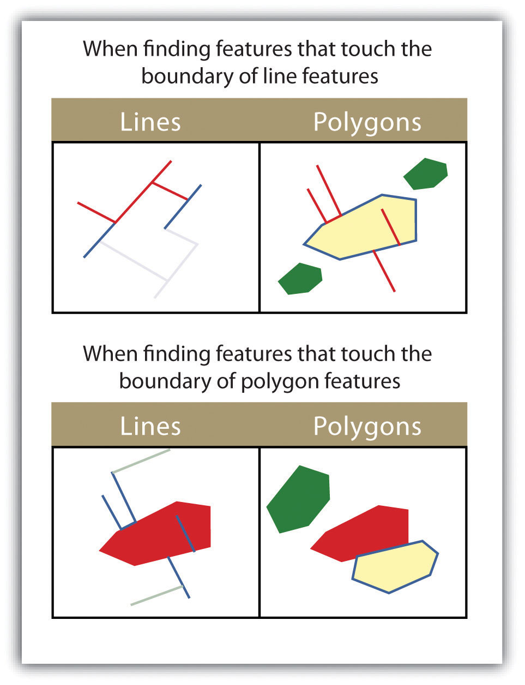The highlighted blue and yellow features are selected because they touch the boundary of the red features.
Figure 6.15
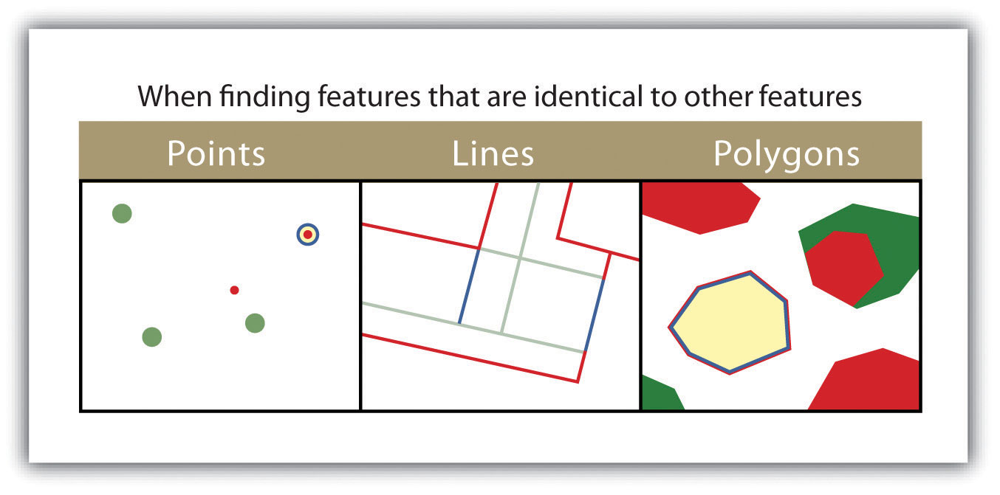The highlighted blue and yellow features are selected because they are identical to the red features.
Figure 6.16
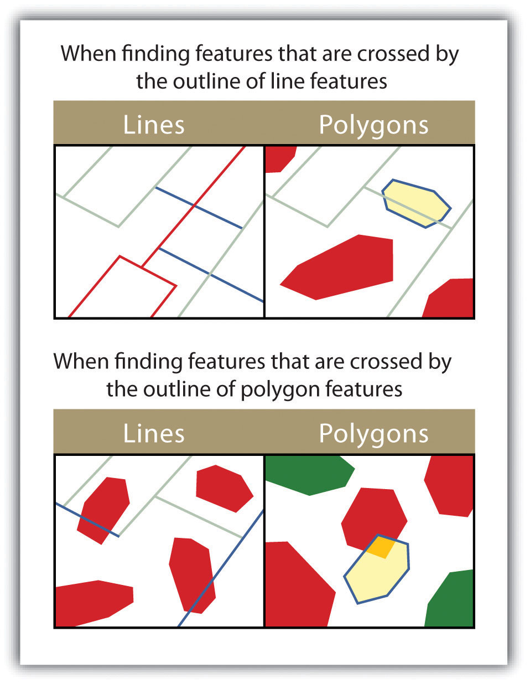The highlighted blue and yellow features are selected because they are crossed by the outline of the red features.
Figure 6.17
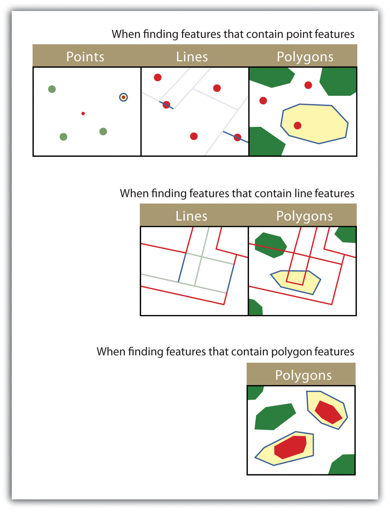The highlighted blue and yellow features are selected because they contain the red features.
Figure 6.18
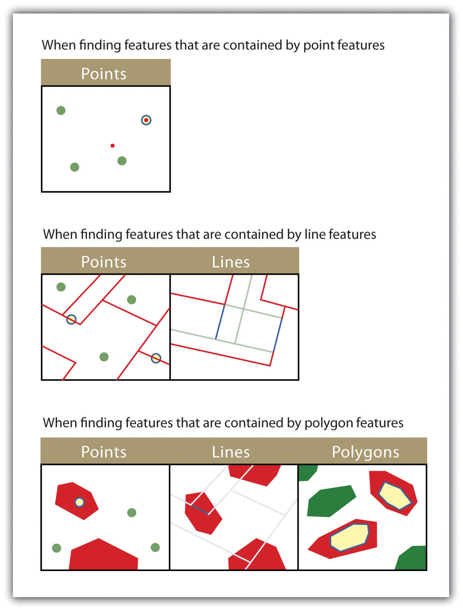The highlighted blue and yellow features are selected because they are contained by the red features.